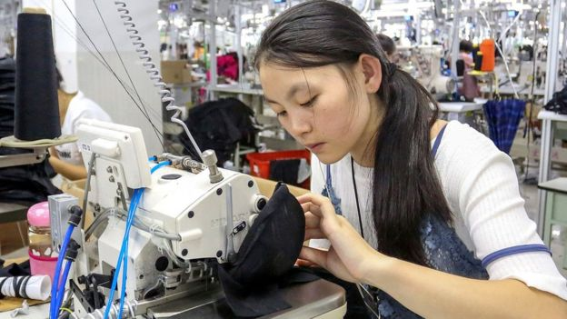

Welcome to BBC.comMonday, 24 September
News
-

Biggest US tariffs on China take effect
About half of all Chinese products entering the US will be subject to the new duties after this round.
Business -
Surprise victory for Maldives opposition
Ibrahim Mohamed Solih defeats President Abdulla Yameen, who has been accused of crushing dissent.
Asia -
Five things to know for the week ahead
Your Monday briefing on the most important stories coming up over the next seven days.
World
Sport
-
Woods seals comeback win & Joshua retains belts - weekend sport reaction
Reaction as Tiger Woods wins the Tour Championship to end a five-year gap without a title, and what next for Anthony Joshua after victory over Alexander Povetkin?
Sport -
Woods wins for first time in five years
Tiger Woods wins the season-ending Tour Championship to claim his first victory in five years, while Justin Rose secures the FedEx Cup.
Golf -
Pique rescues point for Barca
Gerard Pique rescues Barcelona in a pulsating Catalan derby against Girona after Clement Lenglet is shown a red card at the Nou Camp.
European Football
Mumbai Weather Edit

India News
-

Injured Indian sailor rescued from ocean
Navy officials say Abhilash Tomy is conscious and safe after his ordeal in the middle of the sea.
India -
Will organic revolution boost farming in India?
Sikkim's been declared India's first fully organic state, so will this revolution boost farming?
Business -
Will 'Modicare' be a success in India?
India has launched its new flagship health insurance scheme, dubbed "Modicare".
Business -
India thrash Pakistan at Asia Cup
Rohit Sharma and Shikhar Dhawan share an opening partnership of 210 as India thrash Pakistan for the second time at the Asia Cup in Dubai.
Cricket


Editor’s Picks
-
How France created the metric system
The original kilogram can be found in a vault just outside Paris
Travel -
A phenomenon that drives bad decisions
It can explain gambling losses, unhealthy relationships and budget blowouts
Capital -
-
A portrait of an unorthodox marriage
Keira Knightley stars in the film about a taboo-busting writer
Culture -
-
How Earth’s biggest animal started small
This giant among giants started as something far smaller
Earth -
Seeing through Kim Jong-un's K-pop sign
Kim Jong-un may look friendly making the Korean heart symbol - but we should see past the optics
Asia


Featured video


More from around the BBC
-
Twitter warns direct messages were exposed
A "bug" on the network existed for over a year, the company said as it warned a small number of...
Technology -
Glenn Close keeps it in the family
The Hollywood veteran talks about The Wife, a film whose title role she shares with her daughter.
Entertainment & Arts -
Japan's rovers send pictures from asteroid
Pictures have emerged from the surface of an asteroid after Japan landed two robotic rovers on it.
Science & Environment -
Comcast outbids Fox for broadcaster Sky
US cable giant wins rare blind auction process set by the UK's Takeover Panel with £30bn offer.
Business -
China hospital ship docks in Venezuela
Thousands of patients struggling with the collapse of the health system will receive free treatment.
Latin America & Caribbean -
Facebook stops staff helping politicians
The social network will no longer send employees to work at the offices of political campaigns.
Technology -
Changing the lives of people with dementia
Confronting the stigma and isolation people with dementia face in some communities around the world.
In Pictures


From Our Correspondents
-
Will organic revolution boost farming in India?
-
Embarrassing rebuff for PM in Salzburg
-
Russians mock improbable spy duo
-
Imprisoned suffragette letter discovered
-
Brexit: The sound of 'no, no, no'
-
US trade and a tale of two Chinas
-
Venezuela's migration crisis: Is enough being done?
-
Can a new Kangaroo transform British TV?


BBC in other languages
More Languages
- Arabic عربي
- Azeri AZƏRBAYCAN
- Bangla বাংলা
- Burmese မြန်မာ
- Chinese 中文网
- French AFRIQUE
- Hausa HAUSA
- Hindi हिन्दी
- Indonesian INDONESIA
- Japanese 日本語
- Kinyarwanda GAHUZA
- Kirundi KIRUNDI
- Kyrgyz Кыргыз
- Marathi मराठी
- Nepali नेपाली
- Pashto پښتو
- Persian فارسی
- Portuguese BRASIL
- Russian НА РУССКОМ
- Sinhala සිංහල
- Somali SOMALI
- Spanish MUNDO
- Swahili SWAHILI
- Tamil தமிழ்
- Turkish TÜRKÇE
- Ukrainian УКРАЇНСЬКA
- Urdu اردو
- Uzbek O'ZBEK
- Vietnamese TIẾNG VIỆT